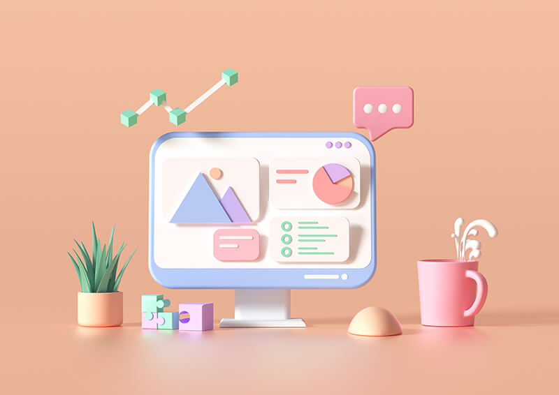
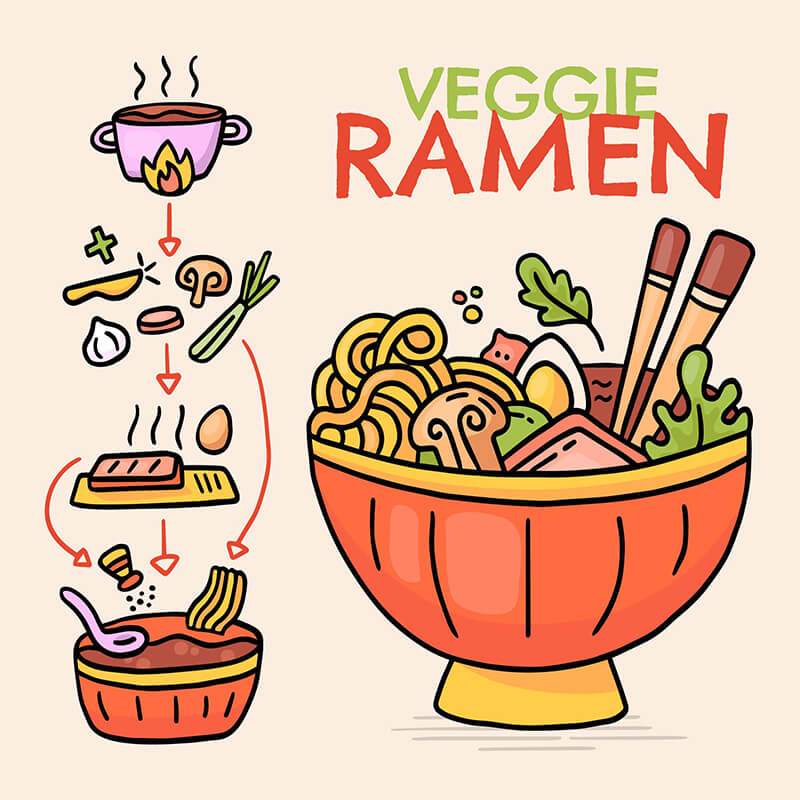
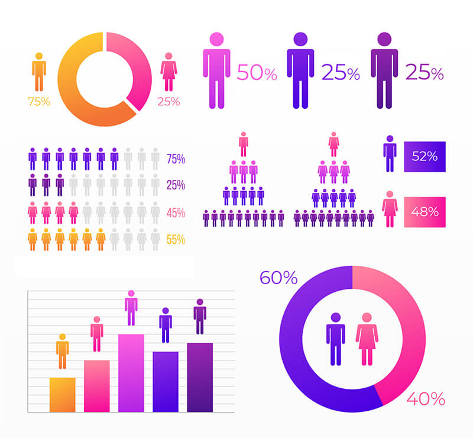
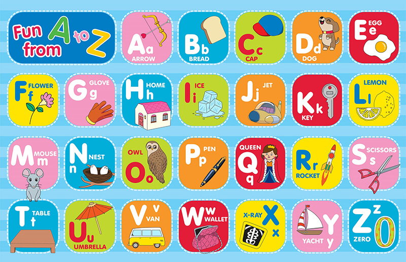
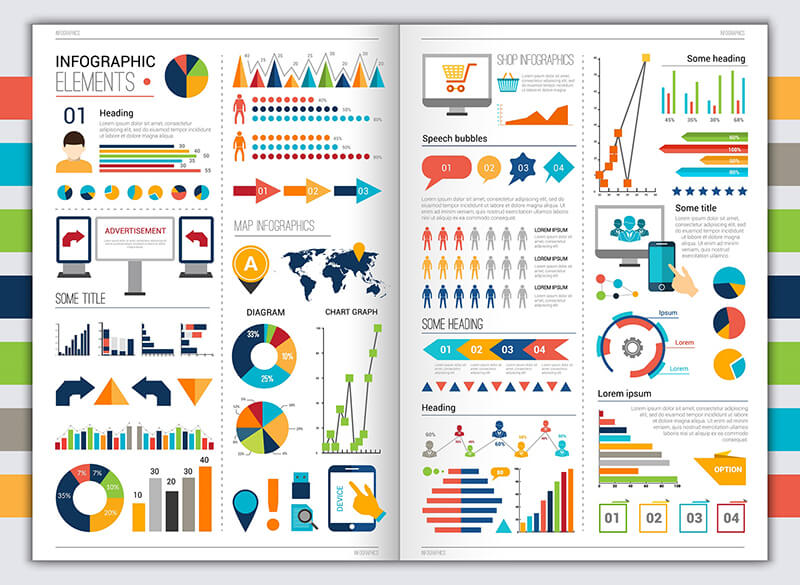
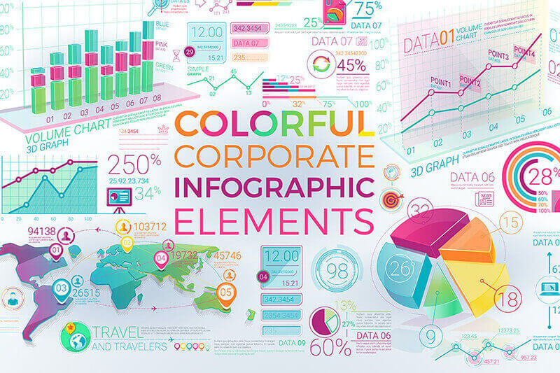
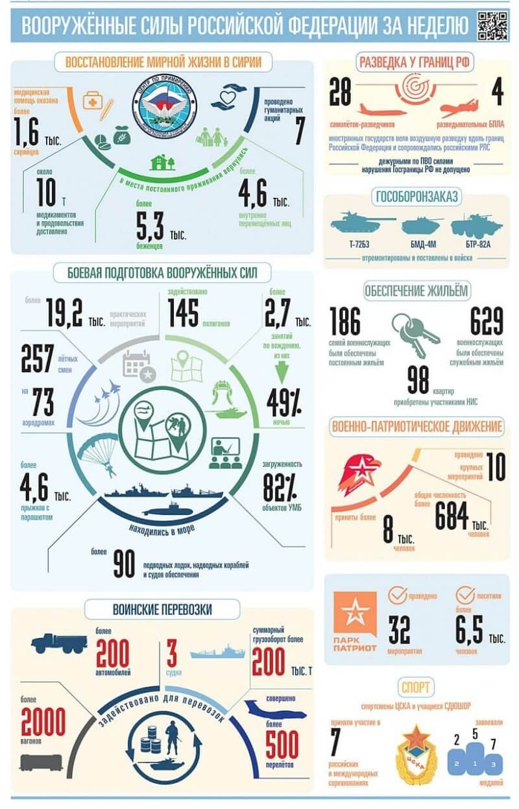
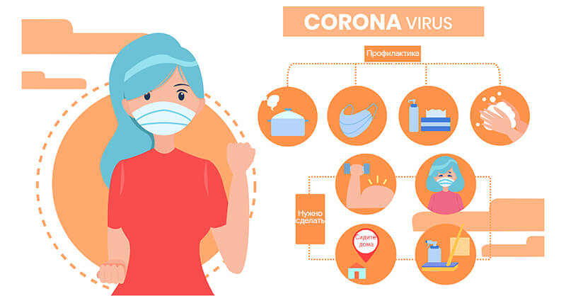

Инфографика – это способ передать информацию о чем угодно через зрительные образы, минимально подкрепленные текстом. То есть, если мы возьмем картинку, на которой изображен самолет, это будет просто декорация или иллюстрация, если она прилагается к статье или странице журнала. Но если графически выделить хвост самолета, его крылья и кабину, пронумеровать и подписать – получится простейший вариант инфографики. Такая картинка уже не просто демонстрирует нам предмет, но и повествует о нем одновременно. Ее легко запомнить и ей хочется поделиться в социальных сетях.

Что такое инфографика и чем она интересна
Это графическое изображение, созданное для визуализации информации, облегчения ее восприятия, лучшего запоминания, более комфортной работы с ней. В основе ее лежит принцип – лучше один раз увидеть, чем сто раз услышать (или прочитать). Инфографика легче воспринимается человеком, чем описание или цифры, об этом говорят научные факты. Также изображение передает информацию в мозг без согласия принимающей стороны: когда наш взгляд натыкается на изображение, мы помимо своей воли считываем информацию и обрабатываем ее. С текстом ситуация другая, мы можем сразу отказаться его читать или прочесть первые несколько слов и решить, что дальше неинтересно. Так человек иногда игнорирует важную информацию, например, инструкции на случай экстренных ситуаций, но если размещать в виде инфографики, то проигнорировать не получится, они запоминаются. В поликлиниках можно встретить инфографику о средствах защиты от распространения вируса, на заводах – о технике безопасности, в самолетах – о действиях пассажира в аварийной ситуации.
Инфографика сочетает в себе разные элементы визуализации данных – текст, график, диаграмму, анимацию, видео.
В чем отличие от остальных видов графики
Главное отличие в том, что инфографика – это полноценный способ или форма передачи информации. С ее помощью можно рассказать историю, дать совет, предостеречь, научить пользоваться какой-то вещью.
{kind=link}
Отличие от иллюстрации
Иллюстрация – это дополнение, не существующее самостоятельно. Ее задача – лучше раскрыть текст, помочь читателю представить описываемое в тексте. Роль иллюстрации изначально вспомогательная, зависимая. Инфографика – основной инструмент, а не вспомогательный. Она самодостаточна, содержит в себе весь массив передаваемой информации и существует сама по себе.
Отличие от визуализации данных
Визуализация данных, это метод, применяемый в статистике и в науке. Когда берется статистика по приросту населения в городе N за 5 лет и изображается в виде графика, это визуализация данных статистики. Инфографика - это объект, например, стенд у ворот администрации города N, на котором приведен график прироста населения за 5 лет с коротким комментарием. Визуализация данных используется в инфографике, является ее частью. Например, диаграмма или график – это уже визуализация статистических данных, но еще не инфографика.
Что такое видео-инфографика
Это инфографика в динамике, сопровождающаяся звуком – речью диктора или фоновой музыкой. Даже самый простой ролик длительностью не более 1-2 минут может совместить в себе несколько изображений, представить их последовательно в виде сменяющих друг друга слайдов или анимаций. Видео также позволяет использовать звук, в отличие от изображения или анимированной инфографики, что делает ее более информативной. В жанре видео-инфографики часто делают инструкции, презентации, отчеты.
Что такое анимированная инфографика
Средний вариант между видео и изображением, это анимация в формате gif или в форме короткого видеоролика. Анимация быстрее привлекает внимание и лучше запоминается, т.к. ее элементы подвижны, за ними интереснее наблюдать. Идеально подходит для коротких инструкций или информационных сообщений в транспорте.
Где применяется
Везде, где есть необходимость распространить информацию, преодолевая невнимательность, равнодушие, отсутствие интереса у людей. Чем больше усилий нужно приложить человеку, чтобы вникнуть в суть вашего обращения к нему, тем выше вероятность, что он откажется это делать. Он будет прав, потому что рекламное или информационное сообщение не несет для него ничего жизненно важного. В условиях агрессивной информационной среды, где за внимание людей постоянно идет борьба, сообщения игнорируются постоянно. Если ваш конкурент придумает способ доносить данные до потенциального клиента быстрее и легче, чем вы, он получит преимущество. То же самое справедливо для социальной сферы: если предупреждающее сообщение будет неудобоваримым, люди проигнорируют информацию и подвергнут себя опасности, потеряют возможность, пропустят важную новость и т.д.
{kind=link}
Инфографика применяется:
- на сайте компании – чтобы легко объяснить посетителю, чем занимается компания и в чем выгода сотрудничества с ней;
- в интернет-магазинах – информация о товарах часто представлена в виде инфографики;
- в интернет-журналах – даже новостные сообщения иногда размещаются в форме инфографики;
- в рекламе – можно рассказать о достоинствах товара, о том, как оказывается услуга;
- в оформлении кулинарных рецептов – в двух кулинарных блогах могут публиковаться одинаковые рецепты, но популярнее будет блог с визуализацией;
- в инструкциях – это самое скучное чтиво в мире, поэтому в инструкциях инфографика особенно востребована;
- в школах и вузах – инфографикой можно оформить правила поведения в столовой или тему урока по любому предмету;
- в медицинских учреждениях – все видели в поликлиниках плакаты о том, что нужно мыть руки, носить маски, чем грозит употребление наркотиков, как распознать инсульт, как оказать первую помощь;
- в презентациях – удобно использовать в отчетах, бизнес-планах, описывать новые методы работы;
- в дорожных знаках – это тоже тип инфографики.
Какой бывает
Единой и общепринятой классификации не существует. Обычно ее классифицируют по предмету и по функции (что и как). Основные виды:
{kind=link}
- хронологическая – привязанная ко времени, показывает перемены. Например, рост объемов продаж компании за 10 лет рисуют в дизайне таймлайна, сопровождают ключевые события блоками внимания или иллюстрациями;
- сопоставительная – до и после;
- географическая – на карте легко показать географию расположения офисов, магазинов или складов компании, отметить количество сотрудников, объемы продаж или производства, логистические данные;
- статистическая – это заключение по результатам исследований, экспериментов, опросов, подсчетов, которое содержит в себе иллюстрированные или анимированные графики;
- историческая – то же, что и хронологическая, но в масштабах истории. Отображает взаимосвязанные крупные события, даты, иллюстрирует или комментирует их;
- иерархическая – дерево или пирамида, показывающая структуру организации, общества, государства или любого упорядоченного образования;
- социальная – обращается к обществу с просьбой или призывом, касающимся той или иной общественной проблемы. В советские времена эту функцию выполняли агитационные плакаты;
- по процессам – объясняет этапы работы механизма или цепочку действий. Так делают наглядные пособия для сотрудников, инструкции к технике и т.д.
- по конспектам – помогает запомнить сложный материал по ключевым точкам конспекта, выделяет главные мысли или выводы;
- по спискам – перечисление равнозначных объектов без определенной последовательности или связей тоже можно представить в виде инфографики с иконками, иллюстрациями или нестандартным дизайнерским решением;
- динамичная – показывает действие, изменение, преобразование, имеет схожие черты с хронологической, но акцентирована на раскрытии явления в динамике;
- бизнес-инфографика – имеет отношение к финансам и бизнес-процессам;
- рекламная – рассказывает о преимуществах товара или услуги, прямо или косвенно призывает к покупке;
- презентационная – создается с целью познакомить с данными, рассказать просто о главном;
- event-инфографика – повествует о конкретном событии. Это может быть приглашение или информационный буклет;
- новостная - информирует о происшествии, новых правилах, новых обстоятельствах или возможностях;
- резюме – представляет персону с точки зрения профессиональных достижений, послужного списка, опыта.
Плюсы и минусы использования
Что лучше, заменить текстовый контент инфографикой, использовать и то и другое или оставить все как есть? Правильный ответ зависит от ряда факторов – направленности вашего сайта или проекта, объема информации, сложности, дополнительных требований (таких как оптимизация).
Плюсы
{kind=link}
- Привлечение внимания к информации или контенту – взгляд скорее зацепится за яркий дизайн, чем за массив текста;
- облегченное восприятие по сравнению с массивом текста или списком – даже список необходимо прочесть от начала до конца, а инфографику читатель видит сразу всю;
- выше вероятность репоста – поделиться изображением всегда проще;
- возможность передать большой объем данных одним изображением;
- наглядность – использование дизайна и зрительных образов при восприятии сообщения;
- проще запомнить – текст в сопровождении иллюстраций запоминается значительно легче, иногда достаточно одного взгляда;
- уникальность, возможность выделиться среди остальных – инфографика может обладать неповторимым дизайном и фирменным узнаваемым стилем вашей компании;
- отсутствие лишнего – формат исключает многословие, читатель это видит и ценит;
- возможность представить скучную информацию ярко и интересно – достаточно найти хорошего дизайнера и никакая информация на вашем сайте больше не будет выглядеть скучно;
- возможность продвижения бренда через логотип на инфографике – картинка может стать вирусной вместе с вашим логотипом в качестве элемента дизайна;
- популярность формата – многие люди ищут ответы на свои вопросы через такие сервисы как Яндекс.Картинки.
Минусы
{kind=link}
- Долго делать – текст написать быстрее, проще, можно сделать это самому без специальных навыков дизайна;
- нужно оплачивать услуги дизайнера;
- в некоторых случаях стимулирует легкомысленное отношение к информации – люди склонны воспринимать простое и красочное, как не очень серьезное;
- схематичность – это не всегда плюс, потому что не любые данные подходят для представления в виде схемы;
- упрощение – если что-то нужно обстоятельно и подробно объяснить, инфографики будет мало, но она может ознакомить с информацией в упрощенном виде и побудить прочесть полное описание;
- бывают сложности при просмотре со смартфона из-за мелкого шрифта;
- нет индексации поисковиками – для оптимизации сайта по-прежнему необходимы полноценные текстовые статьи.
Как сделать инфографику самому
Чтобы сделать качественную инфографику, потребуется серьезная работа в несколько этапов. Как это происходит, с чего начать и какие детали важны - читайте далее.
Вкратце об этапах создания
{kind=link}
- Сформулируйте тему. Не приступайте к созданию, пока не сможете сформулировать для себя ее главную мысль, суть.
- Проведите исследование. Инфографика должна быть авторитетным источником информации, поэтому избегайте приблизительных или оценочных данных.
- Уделите исследованию время. Не экономьте время, чем полнее будет представлена информация, тем больше доверия она вызовет у читателя.
- Рассмотрите тему с разных сторон. Не навязывайте читателю собственную позицию, помогите ему оценить данные с разных углов зрения и сделать самостоятельный вывод.
- Добавьте цифр. Данные в цифрах всегда воспринимаются как точные, даже если цифры приблизительны.
- Подберите стилистику. Помогут примеры и опыт дизайнеров на популярных ресурсах: Behance, Pinterest,Freepic и Dribble.
- Приступайте к разработке. Для этого есть приложения на смартфон и ПК. Ниже мы поговорим о способах создания инфографики подробнее, с описанием сервисов.
- Проанализируйте результат. Подготовьте предварительную версию и попросите коллег оценить ее по критериям, перечисленным ниже.
- Узнайте, что можно лучше раскрыть, а что слишком выделяется. От правильности расстановки акцентов может зависеть успех инфографики.
- Убедитесь, что все понятно. В профессиональной среде часто разговаривают на своем языке и иногда забывают, что сторонний человек не обязан его понимать.
- Убедитесь, что сообщение воспринимается как одно целое. Как одно предложение не может состоять из несвязанных между собой частей, так и информация должна быть целостной.
- Добавьте СТА и ссылки на источники информации. СТА (calltoaction) – это призыв к действию. Подумайте, что должно последовать после просмотра инфографики и сформулируйте призыв: подписаться на канал, совершить покупку, поделиться записью, посетить сайт, зарегистрироваться на мероприятие и т.д. Ссылки нужны, чтобы не нарушать авторских прав и чтобы авторитетность данных была очевидна для читателя.
Правила создания
{kind=link}
- Текст в инфографике служит для объяснения визуальных образов, поэтому его используют по минимуму. Идеальная инфографика понятна без слов.
- Взаимосвязи должны быть явными. Для этого объекты можно пронумеровать или указать на последовательность стрелками.
- Цветовой фон уже является средством выразительности и задает контекст восприятия информации. Для тематики здоровья подходят светло-синие тона дизайна, для военной – защитные, зелено-коричневые и т.д.
- Шрифтов не должно быть много, достаточно двух – заголовка и основного. Акценты можно выделять жирным или курсивом.
- Элементы подбирайте в едином стиле, чтобы не было эклектики дизайна и потери визуальной взаимосвязи.
- Поймите, с какого устройства будет просматриваться, для какой целевой аудитории предназначается.
Принципы
{kind=link}
- Простота подачи и простота восприятия, это одно и то же. Чем проще объясните главное, тем комфортнее будет читателю.
- Смыслы имеют первостепенное значение. Все, что выполняет декоративную функцию (не несет никакой ценной информации), лучше удалить.
- Интуитивность – это когда все понятно сразу. Если читатель ломает голову над каждым графическим элементом, инфографика теряет все свои преимущества.
- Достоверность – проверенные данные с указанием источников, это признак уважения к читателю, который создает вам добрую репутацию.
- Структурированность – структура дает возможность быстро ориентироваться, находить связь и последовательность в элементах. Без структуры инфографика превратится в ребус.
- Цель – нужно четко понимать, зачем вы обращаетесь к читателю, на какой результат рассчитываете, на какие действия инфографика должна мотивировать.
Главные способы визуализации
{kind=link}
- Числа – если акцент на них, выделяйте цветом, размером или жирным шрифтом;
- соотношения и проценты – для этого используются различные виды диаграмм, подходящих для сравнения элементов;
- графики и шкалы – подходят для визуализации изменений на временном отрезке, например, информации о курсе доллара за 5 последних лет;
- Карты – в зависимости от масштаба могут визуализировать глобальные явления или локальные (в рамках города, области, региона);
- Иконограмма – с помощью иконок можно изобразить любой сюжет, если они понятные, информативные и придерживаются единого стиля;
- Макет – структурный каркас, определяющий порядок расположения элементов и значимых деталей инфографики;
- Дизайн – это общее оформление, цветовая гамма, шрифты, цвет и размер текста;
Способы создания с нуля
Создать информационную картинку можно самостоятельно или заказать у фрилансеров. Чтобы сделать картинку самостоятельно, нужно разобраться в существующих сервисах и выбрать для себя самый актуальный. Какими бывают графические сервисы, в чем их преимущества, недостатки и специализация – читайте далее.
{kind=link}
С помощью онлайн конструкторов
Онлайн-сервисы позволяют создавать информационные картинки непосредственно в интернете, предоставляют собственные наборы шаблонов, позволяют загружать авторские изображения.
- Visme– огромное количество бесплатных изображений, иконок, возможность записи голоса и другие инструменты;
- GoogleCharts– позволяет интегрировать инфографику на сайт, обширная библиотека;
- CanvaInfographictool– есть мобильное приложение, библиотека бесплатных шрифтов и иконок, можно создавать инфографики, буклеты, брошюры и многое другое;
- genial.ly – сервис с широкими возможностями для презентации данных;
- Infogram– нет русского языка, но есть удобные шаблоны, можно загружать свои картинки, создавать анимации;
- easel.ly – нет русского языка, но есть интуитивно понятный интерфейс, возможности для создания простых инфографик, подойдет новичкам;
- creately.com – профессиональный сервис для продвинутых дизайнеров;
- pictochart.com – есть готовые темы, функция автоматизации настроек инфографики, можно создавать анимации;
- resumup.ru – сервис для создания оригинального резюме, предназначен только для этого;
- time.graphics – визуализация при помощи «ленты времени», которую можно добавить на сайт;
- visual.ly – делает инфографики на основе социальных метрик Twitterи Facebook;
- Venngage– сервис для создания схематических графиков и пиктограмм, можно работать с форматом .exel;
- Vizify– сервис предназначен для работы с социальными метриками Twitter;
- Cacoo– сервис для профессиональных дизайнеров, много функций – можно создавать анимации, презентации схемы веб-страниц;
- Wordle– сервис для визуализации текста онлайн;
- Hohlibuilder– бесплатный конструктор интерактивных графиков и диаграмм;
- GooglePublicDataExplorer– любые данные из открытого источника можно конвертировать и разместить у себя на сайте, сервис бесплатный;
- Blugraphic– сервис предлагает создавать инфокартинки по заготовкам;
- Kartograph– бесплатный сервис для работы с картами и создания географических визуализаций;
- Ceros– удобный интрфейс, бесплатно доступна только демо версия;
- BeFunky– многофункциональный редактор;
- Adioma– доступны библиотеки готовой графики и иконок, бесплатно – только пробная версия;
- PicMonkey– можно обучаться искусству графического дизайна прямо в программе, бесплатно – только пробный период;
- Animaker– готовые шаблоны, программа ориентирована на простоту и скорость работы;
- MindtheGraph– специально для научной направленности, много заготовок и шаблонов, тематический дизайн.
Скачать готовый шаблон на стоке
Сток – это виртуальный склад графических и других изображений, от фотографий до шаблонов-заготовок для инфографики. Вы можете выбрать бесплатный шаблон на свой вкус или купить у дизайнера. Второй вариант гарантирует вам оригинальность.
Недостаток бесплатных шаблонов в том, что они доступны всем. В интернете периодически будут появляться инфографики, идентичные вашим по дизайну.
Инфографика для презентаций в Powerpoint
В PowerPointесть готовые шаблоны для презентаций, вы можете использовать их или создавать собственные. Программа поддерживает загрузку пользовательских изображений. Как сделать и то и другое пошагово – читайте далее.
- Настройте размер слайда. Перейдите на вкладку «дизайн», затем - «параметры страницы», выберите ориентацию слайда (книжная – вертикально, альбомная – горизонтально), задайте размер вручную, если требуется.
- Выберите макет. Перейдите на вкладку «главная», затем - «макет», выберите подходящий.
- Выберите фон. Стиль фона можно выбрать во вкладке «дизайн».
- Добавляйте элементы SmartArt. Кнопка SmartArtнаходится во вкладке «вставка». Выберите элемент, нажмите «ок», затем кликните на свою диаграмму для редактирования. Внешний вид элемента и его цвет можно изменить во вкладке «конструктор».
- Нарисуйте фигуры. Фигуры можно нарисовать, если шаблонов SmartArt недостаточно. «Вставка» -> «фигуры» -> «добавить фигуру». Изменить цвет и стиль фигуры можно во вкладке формат. Добавить текст можно во вкладке «вставка» -> «надпись». Фигуры можно объединить в один элемент, для этого выделите их с помощью Shift, кликните правой кнопкой мыши по выделенной группе и нажмите «группировать».
- Загрузите фото и рисунки. Зайдите на вкладку «вставка» и нажмите «рисунок», чтобы загрузить собственные фото или другие изображения.
- Сохраните инфографику. Для этого зайдите в «файл» и нажмите «сохранить как».
Перед сохранением не забудьте выбрать формат презентации – PDF или JPEG.
Как сделать на телефоне
Скачайте на телефон приложение и следуйте инструкциям. Рассмотрим 7 популярных приложений для мобильных платформ и их отличительные особенности.
- Canva. Если не знаете, с чего начать, начните с этого приложения. Оно подходит всем, позволяет работать с графикой, разрабатывать свой дизайн на профессиональном уровне. Для Android и iOS.
- PicsArt. Фото и видеоредактор с набором инструментов для создания информационных изображений. Для Androidи iOS.
- Desygner. Для графического дизайна в целом. Много шаблонов, есть категория для инфографики. Платное после пробного периода. Для Android и iOS.
- SimpleGraphMaker. Библиотека диаграмм для Android.
- Chartistic. Библиотека диаграмм для iOS.
- Icongraph. Приложение для создания инфографики. Бесплатно с возможностью совершать покупки. Для iOS.
- BusinessModelCanvas& SWOT. Разные инструменты для визуализации данных на бизнес-тематику. Для Android.
Как сделать в Excel (добавление диаграммы)
- Введите данные для диаграммы;
- Выделите ячейки;
- Нажмите Alt+F1;
- Перейдите на вкладку «конструктор» и отредактируйте макет.
Если работать в Excel неудобно из-за большого объема данных, используйте программы, поддерживающие импорт из Excel (например, Infogram).
Как сделать в Word
- Используйте готовые диаграммы. Перейдите на вкладку «вставка» и нажмите «SmartArt». Выберите фигуру, добавьте текст и сохраните в предпочтительном формате.
- Создайте инфографику в Canva, затем вставьте в документ через вкладку «вставка» -> «рисунок».
Как сделать в AdobePhotoshopи Illustrator
Скачайте бесплатные шаблоны на AdobeStock. Просто наберите в поиске слово «инфографика» и выберите понравившиеся. Первые 30 дней можно бесплатно пользоваться платным стоком, доступно скачивание 10 премиум-ресурсов. Не забудьте отменить подписку, чтобы с карты не списались деньги.
Как сделать видео-инфографику
Для создания видео-инфографики есть свои онлайн-конструкторы. Рассказываем о 5 самых популярных продуктах в сети.
- Renderforest. Шаблоны можно выбирать по тематике видео, редактировать и скачивать результат. Не требуется специальных навыков, не нужно приобретать подписку. Доступно всего 300 Мб места в облаке, дальше - по тарифам.
- AdobeSpark. Позволяет работать с шаблонами, загружать и создавать свои шаблоны. Подходит профессионалам и новичкам. Можно пользоваться бесплатно или купить подписку, чтобы готовых шаблонов стало больше.
- Biteable. Конструктор со стандартным набором функций – шаблоны, дизайн с нуля, библиотеки анимаций. В бесплатной версии видео сохраняются с водяным знаком, платная подписка позволяет сохранять «чистые» видео.
- Lumen5. Большой выбор шаблонов для диджитал маркетинга, можно загружать и работать со своими изображениями. Есть бесплатные и платные тарифы в зависимости от варианта использования.
- Placeit. Предлагает шаблоны для Youtube и соцсетей, удобен для блогеров. Предоставляет небольшое количество бесплатных шаблонов, остальное – по ежемесячной подписке.
Как заказать у фрилансеров
Искать фрилансера лучше всего по рекомендациям его клиентов. Если у вас есть друзья, которым доводилось заказывать инфографику или дизайн, спросите у них совета. Если же нет, всегда можно воспользоваться биржей. Далее расскажем о трех главных биржах рунета.
- kwork.ru. Минимальная стоимость заказа – 500 рублей. Интерфейс - как у интернет магазина, удобный и приятный. Тысячи предложений, всегда есть нужные люди.
- work-zilla.com. Минимальный заказ – 150 рублей. Вы создаете задание, на которое откликаются фрилансеры. Биржа популярна, поэтому при вменяемой стоимости работы отбоя от претендентов не будет.
- fl.ru. Огромная биржа, можно выбрать исполнителя по топу, по резюме, по портфолио, по отзывам, посмотреть его контакты и связаться любым удобным способом .
8 шагов к продвижению инфографики
Инфографика может работать на привлечение трафика не хуже полноценной статьи, если ее грамотно оптимизировать. Первое, с чего начинается оптимизация, это определение целевой аудитории и вытекающие из нее каналы шеринга. Например, если инфографика касается медицины, ее целевой аудиторией могут быть профессиональные врачи, больные или люди, следящие за здоровьем. А каналы шеринга, соответственно, форумы медиков, сообщества любителей здорового образа жизни и т.д.
{kind=link}
Ниже приводим 8 простых действий, которые помогут вам подготовить инфографику к продвижению:
- в URL-адресе страницы должно быть ключевое слово по теме инфографики;
- на странице должен быть оптимизированный SEO-заголовок, привлекающий пользователей;
- инфографика также должна содержать оптимизированный SEO-заголовок, название файла картинки тоже необходимо оптимизировать;
- загружать на сайт картинку следует в форматах JPEG или PNG, заранее убедившись, что она соответствует странице по размеру и разрешению;
- разместите кнопки соцсетей, чтобы была возможность делиться;
- добавьте CTA (призыв к действию);
- Подготовьте для распространения отдельные элементы инфографики – графики, тизеры, выдержки и др;
- настройте аналитику для отслеживания.
Как не надо делать инфографику
Худшее, что можно сделать с инфокартинкой – лишить ее ключевых преимуществ – наглядности, лаконичности, простоты. Ниже приведен список распространенных ошибок, о которых следует помнить, пока у вас не появится собственный опыт работы с графикой.
{kind=link}
- Удалите все, что сбивает с толку. Если элементы не несут полезной информационной нагрузки, они расходуют место и отвлекают внимание от важной информации.
- Не перегружайте графиками. Много данных – это не всегда хорошо. Если ваша инфографика похожа на приборную панель космического корабля, лучше разбить ее на несколько.
- Экономьте текст. Слова должны быть вспомогательными. Попробуйте убрать весь текст и оценить понятность картинки, затем добавьте самое необходимое.
- Не перебарщивайте с цветами. Слишком много цветов или плохие цветовые сочетания режут глаз и отталкивают.
- Элементов не должно быть слишком много. Новички иногда пытаются использовать весь доступный арсенал по принципу «чем больше – тем лучше», в результате внимание читателя сильно рассеивается и он не понимает, куда смотреть.
Где брать изображения
Изображения защищены авторским правом, самовольное их использование может привести к судебному иску, особенно если такое использование поспособствовало вашему заработку. Чтобы этого не случилось, ищите картинки на фотостоках в бесплатном доступе или покупайте у авторов. Идеальный вариант – сотрудничать с графическим дизайнером на постоянной основе, который будет делать уникальные шаблоны или элементы только для ваших работ. Это дорого, но зато у вас собственный источник уникальных изображений и вы уверены, что элементы ваших инфокартинок не встречаются больше нигде. В случае же неправомерного использования вы сами сможете потребовать удалить ваши картинки с других ресурсов.
Если вы сами начинающий дизайнер, то лучший вариант – работа со стоками, чтобы набить руку. Приводим список популярных стоков с возможностью скачать бесплатные изображения, приобрести платные или выставить свои работы.
- shutterstock.com;
- gettyimages.com;
- freeimages.com;
- depositphotos.com;
- pixabay.com;
- thenounproject.com (иконки);
- icons8.com (иконки);
- unsplash.com;
- lifeofpix.com;
- isorepublic.com;
- depositphotos.com;
- thenounproject.com;
- freepic.com.
Как определить качество
У любого инструмента маркетинга и продвижения есть только один критерий качества – эффективность. В первых разделах мы упоминали о необходимости сформулировать цель создания инфографики. Если цель сформулирована, то качество будет измеряться тем, насколько эта цель была достигнута благодаря инструменту. Если вы хотели привлечь трафик, критерием качества будет рост посещаемости. Если хотели повысить продажи, критерием будет повышение конверсии и т.д.
Также очень важен показатель интереса к записи. Даже если она не несет в себе явного коммерческого подтекста, но содержит логотип вашей компании, то любое внимание к ней приравнивается к рекламе. Этот показатель можно отслеживать с помощью собственных инструментов шеринга – кнопок социальных сетей, виджета комментариев и т.д. Если удастся мотивировать людей пользоваться именно этими инструментами, упрощается задача аналитики – вы видите, как часто делились, в каких соцсетях, сколько раз прокомментировали.
Вирусная картинка может быть любого содержания, достаточно разместить на ней логотип компании, ссылку на сайт или название фирмы, чтобы каждый репост превратился в рекламу.
Как стать дизайнером инфографики – 8 шагов
Дизайнер – это человек с хорошим вкусом и чувством стиля. Если вы чувствуете в себе такие задатки, значит, главное у вас уже есть, осталось только научиться пользоваться профильными инструментами и наработать практический опыт. Что нужно делать, чтобы стать дизайнером:
{kind=link}
- изучите основы визуализации данных – есть бесплатные курсы, пособия и статьи по теме, периодически проводятся семинары и мастер-классы;
- освойте Excel – вам придется часто и много визуализировать данные из таблиц, поэтому знание Excel – важное условие;
- практикуйтесь в визуализации информации – начните с изучения онлайн-конструкторов из нашего списка;
- освойте Adobe Photoshop;
- освойте Adobe Illustrator;
- зарегистрируйтесь в Behance – это позволит вам наблюдать за работами интересных авторов, черпать вдохновение, генерировать новые идеи;
- создавайте инфографики бесплатно – это тренировка и наработка портфолио, можно взять заказ на бирже или создать картинку для друзей;
- выберите дальнейший путь – когда портфолио готово, откликайтесь на вакансии и размещайте резюме на биржах.
Где работают и сколько зарабатывают дизайнеры инфографики
Больше всего шансов получить работу у дизайнера-универсала, который может разрабатывать всю необходимую графику для работодателя. Узкие специалисты работают в студиях дизайна – творческих командах или как фрилансеры. Графический дизайнер широкого профиля зарабатывает в Москве от 60 тыс. рублей. Сдельно цена за картинку начинается от 10 долларов и может доходить до 1000, в зависимости от уровня дизайнера, сложности заказа, прочих обстоятельств.
Наглядные примеры инфографики
Ниже приведены наглядные примеры удачных решений и очевидных ляпов, а также примеры инфокартинок по разновидностям.
Хорошая инфографика
Пошаговый рецепт

Статистическая инфографика

Алфавит

Плохая инфографика
Перегруженная

Плохая статистическая

Примеры разновидностей инфографики
Новостная

Образовательная
Информационный дизайн

Заключение
Работа с инфографикой, прежде всего - творчество, которое приносит пользу. Она полезна в бизнесе, в науке, в социальной сфере, в статистике, в медицине, в сфере образования и обмена информацией. Это отличный вариант хобби, которое может приносить доход, а для предпринимателя – инструмент, открывающий новые маркетинговые горизонты. Это способ научиться общаться с аудиторией легким универсальным языком, если вы блогер или любите вести социальные сети. Это лишь немногие из причин не откладывать в долгий ящик освоение инфографики.
Оставить комментарий
Войти с помощью